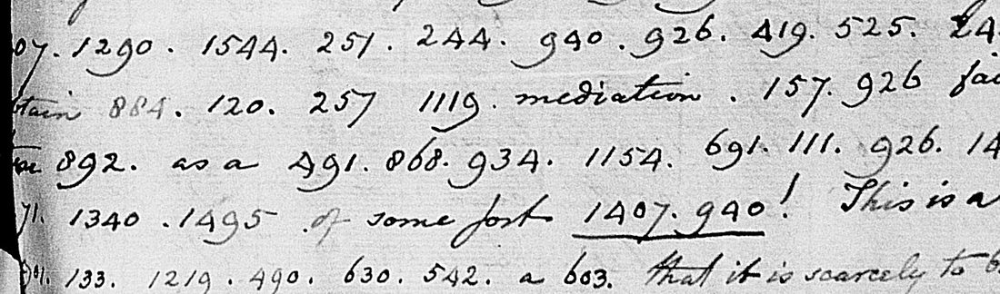
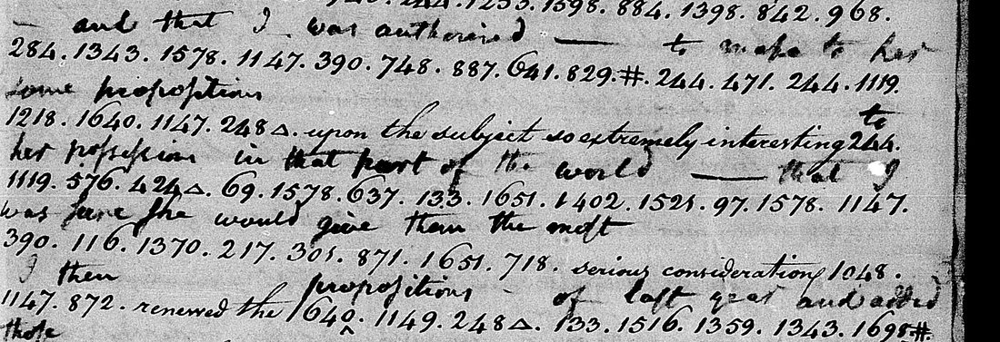

At a glanceKey from external plaintext · complete
- The letter
- George W. Erving, American chargé d’affaires at Madrid, to Secretary of State James Madison, 10 August 1807, with a postscript of the 11th: private letter No. 24, the duplicate, headed “In Mr Pinkneys Cypher, the Cypher of ye Legation”.
- Where
- National Archives, RG 59, Diplomatic Despatches, Spain, vol. 10, on microfilm M31 reel 12, frames 0362–0367 (catalog NAID 188605361). Founders Online prints the letter decoded, without the code groups (early access 99-01-02-1993). Not in the catalogue and not on DECODE.
- The cipher
- The legation code Charles Pinckney used at Madrid: numbers up to about 1,700 for words, syllables and letters, partly in alphabetical runs, written between dots inside the clear text. A caret over a group makes it plural.
- How it was deciphered
- The 1,145 groups were transcribed from the film and lined up with the Founders text, which gave 414 rows of the code. Of the 47 groups it shares with Jacob Wagner’s 1803 decode of Pinckney’s own despatch, 45 agree and two stay undecided.
- What it says
- Godoy paid for the Hanover bargain out of his own funds, sees Hanover handed to Westphalia, “believes that he has been deceived and is furious”, and plans, “as a dernier resort”, an alliance with England.
- Still open
- Eight groups that occur only once (633; 632, 455, 1482; 767, 679, 378; one lost in the binding) and 916 in the postscript. Counting conservatively, with hidden digits and emendations also set aside, 94.25% of the groups stand.
- Credit
- Feyseel Nur, with Claude Opus 5.5 subagents (transcription, key rebuild, decode); key check against Wagner’s 1803 decode; adversarial review by OpenAI Codex. Contributed in PR #21.
01 The letter and its two texts
Erving was the American chargé d’affaires at Madrid, and the code he used was the legation’s, from the time of Charles Pinckney, minister there before him. His private letters to Madison were numbered; No. 21 of 24 March 1807, “in the Cypher of the Legation”, is printed from Madison’s own decode and is written up with the 1812 Adams despatch on the legation-codes page. No. 24, of 10 August 1807, opens on the news that the peace (of Tilsit) was signed and asks what it will change between France and Spain. Much of its first six pages is in code.

Two texts of it are at hand:
- The duplicate on the film. NARA’s microfilm of the Spain despatches (M31 reel 12, frames 0362–0367) has the second copy, marked “Duplicate”, with the code groups in ink and no decode between the lines. The left edge of the third page and the right edge of the fourth are partly hidden in the binding.
- The Founders text. The Papers of James Madison print the letter in early access on Founders Online (99-01-02-1993) as plain English, decoded, with ten blank gaps ⟨ ⟩ and a few supplied words. They give the source as “DNA: RG 59—DD, Spain” and do not say how the code was decoded. The groups are not printed.
The two agree in the slip “my unofficial letter of March 4th” (the image has “March 4”; the letter meant is that of 24 March), and differ in small ways: Founders heads the letter “In the ⟨Cypher⟩ of the Legation” and prints “you will not probably annex” where the film has “you probably will not annex”. Several Founders brackets fall where the film loses digits in the binding (⟨ ⟩ has been informed, deceive him ⟨ ⟩, ⟨Prince⟩, ⟨a⟩gents). Whether the editors decoded this duplicate or took their text from another copy is not settled here; nothing below depends on it.
02 Pinckney’s code
The code is a single list of numbered words, syllables and letters. Groups are written with dots between them inside the clear sentences, and a word may take several groups: 724. 549. 934 is Ha-nov-er, 1552. 66 establish-ing, 1684. 110. 1432. 368. 624 Ca-ta-lo-ni-a. The commonest are 1651 the, 133 of, 244 to, 1484 is, 1343 and and 926 he. A small triangle or caret over a group marks a plural: 424^ ions, 1593^ tions, 580^ ports.
Parts of the list run in alphabetical order, which helps place a group seen once:
| Groups | Values |
|---|---|
| 742–745 | at, ate, ated, ation |
| 870–880 | their, them, then, … there, therefore, these, they, thin, thing |
| 884, 887 | this, tho’ |
| 1340, 1341, 1343 | an, ance, and |
Higher up the order breaks (1661 Prince, 1680 can, 1686 by, 1688 but), so the code is only partly alphabetical. Erving made slips of his own: 66 (ing) for in three times, 665 for 605 in change, 870 their for they, and in Hanover he wrote 724. 549. 943 twice and 724. 549. 934 once, while 943 is ly in un-friend-ly. In March he had written Hanover 724. 529. 934.
The rebuilt list (key_pinckney.tsv) has 414 rows: the 395 numbers that occur in this letter and 19 more from Wagner’s page, each with where it is attested.
03 The decoded text: Hanover, Portugal and Godoy’s counter-project
Decoded groups in capitals, Erving’s clear words in lower case; [?] a group with no value, {…} a conjecture
The letter is about Manuel Godoy, the Prince of Peace, and what the peace of Tilsit meant for him. First the Hanover bargain of the spring, which Erving had reported in March:
I did not then know what I now learn that a considerable SUM OF MONEY WAS PAID BY THE PRINCE (OUT OF HIS OWN FUNDS) OVER AND ABOVE the STIPULATION FOR TROOPS. THE TROOPS MARCHED and we read of THEIR ARRIVAL ON THE ODER. … but THE war concluded it is found more convenient TO ADD HANOVER to the KINGDOM OF WESTPHALIA and the PRINCE IS TOLD that HE shall HAVE A TERRITORY somewhere ELSE. It may be the intention OF THE EMPEROR TO GIVE HIM one, but THE PRINCE does NOT THINK so; he believes that he has been DECEIVED AND is FURIOUS. Already a project is formed OF ESTABLISHING A KINGDOM OF EBRO including CATALONIA NAVARRE AND BISCAY and the plan OF INVADING PORTUGAL which during the war SERVED only AS A MEANS OF PROCURING MONEY from time to time IS NOW seriously RENEWED with a view to ACTUAL CONQUEST …
Portugal has been told to close its ports to the English. Godoy is still flattered with EXPECTATIONS of personal aggrandisement, but now begins to see that he will not be forgiven for his [?] intrigues, and “HIS actual determination IS TO RESIST”. Then the counter-project, on the third page:

IN THE mean TIME he has formed a COUNTER PROJECT. The first part OF HIS PLAN IS BY representing the vast [?] [?] [?] SPAIN BY THE WAR TO obtain the permission OF FRANCE TO MAKE A SEPARATE PEACE WITH ENGLAND AND NOT suspecting doubtless that RUSSIA HAS HERSELF any understanding WITH FRANCE HOSTILE TO ENGLAND HE HOPES TO obtain THIS POINT THRO’ HER mediation. IF HE fails there THEN as a DERNIER RESORT HE WILL MAKE AN ALLIANCE of some sort WITH ENGLAND! This is a COURSE OF SO DESPERATE a CHARACTER that it is scarcely to be BELIEVED IN.
Erving has this “from the very [best?] AUTHORITY (not from HIMSELF)”. Godoy regrets sending his troops to Hanover, has no expectation of seeing them again, and wishes he might “QUIETLY RETIRE FROM HIS STATION”. The fourth and fifth pages are a portrait of the French ambassador, François de Beauharnais:
A NARROW LOW INTRIGUING POLITICIAN, AFFECTING CANDOR, [?] perfectly false, assuming TO CONTROUL EVEN OPINION BY THE SUPERIORITY OF HIS TALENTS, THO’ certainly destitute of any particular advantage IN THAT RESPECT; full OF HIMSELF, consummately VAIN AND OSTENTATIOUS, AND IN HIS CONDUCT TO THE PRINCE inSOLENT AND overBEARING. THIS ILL suits with THE PRINCE WHO HIMSELF HAS VANITY Enough to think that HE IS is the greatest MAN IN EUROPE EXCEPT BUONAPARTE …
The sixth page ends on the thought that France may drive “THE ROYAL family OF SPAIN AS WELL AS OF PORTUGAL TO ESTABLISH THEIR EMPIRES ON THE OTHER SIDE OF THE ATLANTIC”. The rest of the letter is in clear. The postscript of the 11th goes back into code: Spain is to send an army into Portugal and French troops will take its place; the Emperor has written to the King, advising him to take the Prince of Asturias into his confidence; and Godoy, talking to the Prussian chargé d’affaires, says that “IF THE KING HAD NO successOR HE THE PRINCE WOULD risque EVERY THING TO KEEP BUONAPARTE OUT OF THE COUNTRY”, but that, unpopular and blamed for every distress of the country, he has “NO course … BUT IMPLICITLY TO SUBMIT to all THAT MAY BE DEMANDED”. Eleven weeks later the treaty of Fontainebleau (27 October 1807) divided Portugal and promised Godoy a principality in the south of it.
04 The code against the Founders text
Founders leaves ten blanks in the coded passages. The code fills six of them with values that recur elsewhere in the letter outside the gaps. Grades follow the adversarial review (codex_review/gaps.md):
| Founders | Groups | The code | Grade |
|---|---|---|---|
| ⟨ ⟩ has been informed | [15]78. 1010. 284 | THAT GOVERNMENT (Portugal’s); the first digits of 1578 are in the binding | solid |
| flattered with ⟨ ⟩ of personal | 176. 979. 1593^ | EXPECTATIONS; 979 and 1593 occur only here | plausible |
| given for ⟨ ⟩ | 408. 633. 69. 191. 728^ | for-GIVEN for HIS [?] INTRIGUES; 633 has no value (past is a guess) | speculative |
| deceive him ⟨ ⟩ (to do him | [1]343 | AND | solid |
| not destitute of ⟨ ⟩ | 632. 849. 1147. 455. 1482 | ?-r-i-?-?; pride is a guess | open |
| France ⟨ ⟩ to England | 1544. 251 | HOSTILE, the same pair as in “in fact hostile or unfriendly” | solid |
| as a dernier ⟨ ⟩ | 1154. 691. 111 | RESORT (1154 as in res-is-t) | solid |
| his troops ⟨ ⟩ has no expectation | 244. 724. 549. 934. 1343 | TO HANOVER AND | solid |
| expectation of ⟨ ⟩ seeing | 133 | nothing is missing: of, then seeing in clear | no gap |
| tranquillize ⟨ ⟩ the alarm ⟨or⟩ | 877. 1497. 13[?] | THESE AL[ARMS], TO CONCEAL; the group after al is half hidden | solid for THESE |
Words Founders supplies in brackets are confirmed by the code: ⟨must⟩ (1250. 1203), ⟨see⟩ (with NOW before begins, 429), ⟨character⟩ (603), ⟨Prince⟩ (1661); “the troops to ⟨be⟩ employed” is THE TROOPS SO employed (1219), and “Embassador here ⟨are⟩” has IS (1484). In three places the code says something else:
- “from the very best informed ⟨persons⟩”: the code has VERY [368] AU-THO-RI-TY (748. 887. 137. 1362). Best for 368 is a guess, since 368 is ni in Ca-ta-lo-ni-a.
- “the vast costs brought about by the war”: the code has the vast [767. 679. 378] SPAIN BY THE WAR. The three groups occur once; Spain (1210) is certain.
- “the character of that with which his recommendation”: the code has CHARACTER OF THAT WHICH HIS, with no with.
05 How the key was rebuilt and checked
The groups were transcribed from the six frames and set against the Founders text phrase by phrase, so that each group took the value Founders gives at that place; a value fixed in one place was then carried to every other occurrence and tested there. This is a key recovered from a plaintext found elsewhere: most values rest on the edition, and the work cannot be a blind test of them. Two checks stand outside it.
Wagner’s 1803 decode. Pinckney’s own despatch of 22 February 1803 (M31 reel 7, frame 0348) is in the same code, and Jacob Wagner, chief clerk of the State Department, wrote its decode between the lines. It shares 47 group numbers with Erving’s letter. For 45 of them the values agree (217 would, 1218 some, 872 then, 748. 887 au-tho, 1402 wor, 1598 tain, 301 give …). Two are undecided: 584 (na in the key, nation in the alignment, Wagner’s nations?) and 943, which in Wagner’s line stands between friend and ship with no word of its own.

The March letter. Erving’s No. 21 of 24 March, with Madison’s decode (targets/erving1807), gives further pairs. With Wagner it supports 716 of the 1,145 groups (62.5%, 141 different numbers) under a strict match; a value that recurs with the same sense elsewhere in this letter, or has that outside support, covers 908 (79.3%). The rest, about one group in five, is fitted to the Founders text alone.
The transcription. 53 groups, from legible stretches of four frames and the three spellings of Hanover, were re-read on the images by the reviewer: no digit differed. That is a purposive sample, not an error rate for the whole.
The review. OpenAI Codex reviewed the files adversarially and found the result confirmed but overstated (codex_review/review.md). Its corrections are the figures used on this page: 45 of 47 Wagner groups (not 46), 79.3% recurrence or outside support (not 80.5%), and six firm gap fills rather than ten.
06 What remains uncertain
Of the 1,145 groups in the alignment, 1,136 have a value (99.2%) and 1,125 (98.3%) give sense without the eleven marked conjectures. Grades as in the repository’s conventions: most values are C, from the known plaintext; M uncertain; I inferred from context or from the alphabetical order.
- No value (each occurs once): 633 (“his [?] intrigues”); 632, 455, 1482 in “destitute of ?-r-i-?-?”; 767, 679, 378 before “Spain by the war”; a group ending in 4 hidden in the binding (“affecting candor, [?] perfectly false”); and 916 after “the Prince of [Asturias]” in the postscript, where its usual value as makes no sense.
- Two positions not in the alignment: after 1114. 244 (“advised him to”) on frame 0367, where a hole in the leaf may or may not hide a group, and the start of the last line of the postscript page, half covered by the facing leaf, probably 244 to (“submit [to] all”). Counted, they make the transcription 1,147 groups and the share that gives sense 98.1%.
- M: 368 best; 586. 1424 narrow low (Founders has the words, the split between the two groups is assumed); 66 West in West-ph-al-ia (66 is ing elsewhere); 169. 80. 115 d’af-fai-res; [x]47 Asturias; 1543 t in except; 310, which is ceiv in deceived and liev in believed; and the emendations of Erving’s slips (943 twice, 66 three times, 665, 870).
- I: EXPECTATIONS (176. 979. 1593^, fitted inside a Founders gap); 878. 1394 they are, placed by the alphabetical run after 877 these (Founders: “whatever these are”); and the 37 groups whose first digits are hidden in the binding, restored from context (among them the 1578 of THAT GOVERNMENT and 13[?] in alarms).
- The conservative count. Setting aside the conjectures, the 37 restored groups and nine emended occurrences, the review counts 1,081 of 1,147 positions (94.25%). That is a sensitivity count, not a measured error rate; the excluded groups mostly give sense.
- The Founders source. How the editors decoded the letter, and from which copy, is not known; the ten blanks may reflect the binding of this duplicate or the state of another copy.
Full texts
The transcription and the decryption of every document on this page, so that the reading can be used and checked. Short files are shown here; all are in the repository.
Erving to Madison, Madrid, 10 Aug 1807, No. 24 "Duplicate"
George W. Erving reports to Madison that Godoy paid for the Hanover bargain out of his own funds and, Hanover going to Westphalia with the peace, believes he has been deceived; a Kingdom of Ebro is projected and the invasion of Portugal is renewed with a view to conquest, while Godoy's counter-project is a separate peace with England through Russian mediation. The postscript of the 11th has Spain sending an army into Portugal and Godoy seeing no course but to submit.
Transcription
# Erving to Madison, Madrid 10 Aug 1807, No. 24 Duplicate, "In Mr Pinkneys Cypher, the Cypher of ye Legation"
# NARA RG 59 DD Spain vol. 10 = M31 reel 12 frames 0362-0367 (naId 188605361). Mixed plaintext + code groups.
# Format: frame/line | text with groups in [ ] ; ^ = caret/triangle mark over group; ? = uncertain digit; {} = cut at gutter
## 0362 right page (p.1)
0362.1 | The alterations which this Event may produce [69.1651.32.424^.500.1290.1343.1210] must be interesting to you
0362.2 | ...when it may be expected that [1651.582.179.133.819.637.163^] hitherto somewhat dependant on the circumstances [133.1651.{3}88] will be [776.975.1343] that I shall therefore be able
0362.3 | ...between two certain persons in which was exposed [1651.134.43.1686.1651.738.133.1290.244.{1651}.1661.133.628.133.1651.305.977.691.743.133.724.549.{9}43] I stated what appeared to be [1651.715^.133.1651.134
0362.3b | ...] and of its acceptance [1343.133.1481.525.618.611.1341] but I did not then know what I now learn that a considerable
## 0363 left page (p.2)
0363L.1 | [1343.133.1481.525.618.611.1341] but I did not then know what I now learn that a considerable [330.133.6.390.1228.1686.1651.1661] ([276.133.408.271.710^]) [800.1343.621] the [317.1638.1514(faint).478.111.146.1194] [1651.111.146.1194.462.975] and we read of [870.1398.139.1497.509.1651.131.849] more [111.849.443(corr. over struck group).11{94}] were [837.975] ([916.465] I think [624.525.1623.1577]) [134{3}] had the [388.1560.69.1158] must have been [398.1688.1651] the war concluded it is found more convenient [244.1698.97.724.549.943] to the [1524.1136.133.66{?}.893.1497.1146] and the [1661.1484.242.97] that [926] shall [599.624.1583.137.700] somewhere [26] it may be the intention [133.1651.738.244.301.1114] one, but [1651.1661] does [553.879.857] so, he believes that he has been [87.310.1158.1343] is [708.849.426.277] - Already a project is formed [133.1552.66.624.1524.1136.133.1298.1463] including [1684.110.1432.368.624] [593.1017.849.537] [1343] [499.525.1684.1362] and the plan [133.69.1017.1453.298.579] which during the war [1379.97] only [916(above blot)] [624.293^.133.1656.756.66.6] from time to time [1484.429] seriously [34.1539.97] with a view to [614.1017.1521.1387.855] in which case [296.226.268.624] if not [916.1627.1146] will be [1698.1174.244.1481] The demand respecting the [1524.1136.133.980.146] has not [1357.1164.43] [1688.1481] is very well known [244.1651.1661] to be in
## 0363 right page (p.3) — left edge hidden in binding; {..} = lost/partly visible
0363R.1 | [con]tempt [1514.916.244.579] no time has been lost. [{15}78.1010.284] has been informed (immediately upon [{16}51.628]) [1578.1481.1250.1203.957.1481.525.580^.{1}201(gutter: '201/301').1651.333] As far as the [956.1193.543.424.{1}33.1651.1661] may be thought necessary [244.1651.{1}242^.133.1290] respecting [884.903.926] may be [s]till [777.111.1583.446.1407.176.979.1593^.133.{..}91.1497] aggrandisement; [1688.926.429] begins [{2}44.1181.1298.1578.1481.1484.553] likely [926.{..}71(gutter '371'?).1521.1027] for [301.594] for [408.633(written over struck group).69.191.728^] [I]t will not therefore be easy [244.87.310.1023.1114.{1}343] / [244.769.1114] justice / [926.1484.553] destitute [{1}33.632.849.1147.455.1482.408] actual determination [1484.244.1154.1484.111.69.1651] mean [{..}50(? 'so')] he has formed a [904.934.1656.162] - The [f]irst part [133.408.1242.1484.1686] representing [th]e vast [767.679.378.1210.1686.1651.388.244] [ob]tain the permission [133.1290.244.471.624] (struck group) [{1}181.1.743.628.1407.940.1343.553] suspecting [dou]btless that [523.347.1119.1419] any understanding [{14}07.1290.1544.251.244.940.926.419.525.244] [ob]tain [884.120.257.1119] mediation. [157.926] fails [the]re [892] as a [491.868.934.1154.691.111.926.1411.{4}71.1340.1495] of some sort [1407.940]! This is a [{..}01(partly torn).133.1219.490.630.542] a [603] that it is scarcely to be
## 0364 left page (p.4) — right edge partly hidden under p.5
0364L.1 | [1169(written over struck group).310.1158.69] yet [1147.1522] from the very [368.748.88{7?}] / [137.1362] (not from [1114.1419]) [1578.324.(struck).1484] the present situation of [408.1609(1st digit unsure, '7609'?).926.537.736.111.525] most [211.1583.38] the having sent [408.111.146.1194^.244.724.549.934.1343.347.151] expectation [133] seeing [871.1202.926] Expresses a wish that he may be permitted [1634.163.111.38.244.52.426.1298.704.408.314.69.1651.293.250] to [389.133.169.916.1249] as [575.1511.71.4.1453.298.1536]. an Extraordinary embassador is to be sent to congratulate the Emperor on the successful termination of the war [1343.151.293^] ([1533.1651.1221.229]) [1397.508.1589.244] convince him of the loyalty and attachment of the Spanish government [916.624.120.{1}285(? line-end '120'+'285').244.884.120]. I inclose herewith an Extract of a letter from Bilboa which was published in ye French papers on the 22 July. [1651.603.1343.1387.3{?}] / [133.1651.1287.28.1698.691.1118.1484] very little calculated [244.182.594.385.226.1181.877.1497.13{?}] / [244.1387.982.1497.1651.656.1298.386.525.13{3}] / [1290] if they be [69.83.1544.251.691.359.1286.943] / [691.244.469.1000.1119] Interests in any [393] perhaps of [1497.1521.1651.285] that coud have been [398.926] / [1484.1651.238] proper [624.586.1424.66(or 69?).191.728.66]
## 0364 right page (p.5) — left edge hidden
0364R.1 | [{..}82.111.1143.1146.594.1695.1487.66.1680.769.849] / [{..}4(gutter 'A.')] perfectly false, assuming [244.1560.372.1521.1533] / [{..}91.1686.1651.118.1147.691.1481.1362.133.408.1596] / [{..}32^] (struck group) [887] certainly destitute of any particular [a]dvantage [66(sic, for 69?).1578.1155] full [133.1114.1419] [co]nsummately [1017.69.1343.394.1587.110.111.1147.277] / [{1}343.69.408.1387.805.244.1651.1661] in [1219.232] / [{1}343] over [1029.66] . [884.74.1521] suits with [1651] / [{1}661.697.1114.1419.347.1020.1481.1362] Enough [to] think that [926.1484] is the greatest [469.66(sic? for 69).405] / [{..}6.630.1543.681.569.101.918.1298.1343.1578] [in] political Management [926.347.1533.1651.1696] / [{..}03.1000.133.1114]. In fine [1030.345.151.1484] [h]as rendered [1114.1419] perfectly [130.1147.277.244] / [{16}51.1010.284.1343.1451.997] to Every [825.1299.305] / [{..}83] . Amongst the [476.999^.875.1484] scarce [38.509] / [{..}98.1416.926.347.553] off [737.1174.1686.1665.1586] / [{..}.244.1590.618.725] the line of policy, which [the]ir [1183.1162.1497.1010.284^.798.244] pursue [se]eming to suppose it to be in the power of [324] / [{..}79^ or {99}9^.244.1452.977] the policy of [870.1010.284^] [a] striking instance also of [408.155.556.1341.69] [po]litical affairs. I suppose that you will not desire [to know?] the [1696.1142^.674.926.347] from time to
## 0365 left page (p.6)
0365L.1 | time [301.594.244.295]. it is much of the [603.133.1578.674.(struck 926).408] recommendation to [496.244.1372.383.1651.1219.359.97] not knowing [1578.1651.1219.359.97.1680.553.1027] closed without [1651.956] operation of [113.-366.324.1340] ungraci[ous] [1698.1610.1484.319.745.133.1287.1694^]. it is to be expected that no measure will succeed [1118.1686.1453.111.133.282.1298.1698.811.1554] and that no sentiments really(over struck 'merely') cordial & friendly which did not [1166.1540.1484.111.1411.1027.1531.744.509] the [{16?}51(first digits faint/absent).929.1298.1578] every thing will [1586.244.1023] / [1364.1343.426.137.743.244.737.1531.915]. apprehension, and drive [244.490.1212.934.745] / [528] may expect [872.244.1181.1298] offended [1663] / [89.1343.1695.1487.975] independance supported by [1218.62.133.87.1484.424] on [509.1298.791.1343.1651] vigor & determination which has been [382.97.244.1029.814.1497.1521] obstacles [509.165{1}] / [452]. The objects [133.1290.669.1535.878.1394] will doubtless [1027.1442.38.970.1487.975.1688.870] / [1280] in their Operation [813.1478.1298.1651.146.1362] / [1497] family [133.1210.916.663.1521.916.133.579] / [1552.870.739.426.1554] on the [452.791.133.1651.74{..}] / [1519.253.262]
## 0365 right page, 0366: plaintext only (Prussian prisoners ... signature; '11th Postscript ... The result of what I learn is.')
## 0367 left page (postscript, p.?)
0367L.1 | That nothing [1680.665(or 605? see check).1651.89] termination [110.1473.594.916.244.579] ([674] is before correctly stated) [1210.1484] directed [244.1417.97.1340.1391.244] support [1651.837^.43.1343.244] occupy [1651.580^.133.579.1651.111.146.1194^.1219] employed [1411.1027.537] plac[ed] [1686.624.1287.477.69.1210.674.1481.1484] believ[ed] [1484.1497.535.69.716] - [877.1287.111.146.1194^.141{1}] doubt [230.525.125.755.1635.1651.580^.133.1210]. It is true [1578.496.347.1164.490.426.975.244.1698.1194.111.1651.206.262.1697.112.1203.27] hence [1651.956.1193.540.133.523.1484] near [38.610.1598]..
0367L.2 | [1651.738.347.215.594.244.1651.1524.133.121{0}] / [1481.1484] believed [1578.926.347] advised [1114.244.{?}] / [1597.1651.1661.133.200.380.1146^.422.408] confidence / [1343.347] spoken [69.653(6 over another digit).1373.1298.1583.39^.133.1651.1661.133.628].
0367L.3 | [1651.(struck group).1520.111.1583.69.624.1387.1162.{526.}248(? 'struck 521' at line end).1407.1651.571.381.792.1340.269.96.169.80.115{?}.347.174.975.735] in [1457.584.742.1651.1451.1013.982.709.628.43.1686.523.926.1169.310.1023.525.1651.653.1402.1203.916.244.1651] intentions [133.1651.738.1155.66.1210.1343.1114.1419.926.526.1362.525.1578.157.1651.1524.723.151] success [691.926.1651.16{61}] / [217] risque [1535.1362.880.244.1473.938.681.509.101.1398.1590.276.133.1651.903.1688.1578.408.582.179]
## 0367 right page (top)
0367R.1 | [c]ertainly [217.553.1027.101] prov'd [133.1686.1651.1661.133] / [{..}47.916.677.1484.408.941.1578] besides [926.1522] / [{1}578.926.(1651.1661.133.628).1484.553.1331.1638.1518] / [{1}343.1578.1497.1521.1651] distresses [133.1651.903.665] / [{..}71.1636.975.244.1114.875.390.151] course [478] / [{1}114.876.1688.71.311.1143.1481.38.244.322.18] / [{..}] all [1578.1280.1027.837.975].Transcription
# Erving 10 Aug 1807 code passages, groups aligned to values. Format per line: ref | group=value ... # value conventions: '+s' = triangle/caret plural mark; '?' = conjectural; '#' = hidden in binding (digits partly lost); 'X' = unread 0362a | 69=in 1651=the 32=relat 424^=ions 500=between 1290=France 1343=and 1210=Spain 0362b | 1651=the 582=po 179=licy 133=of 819=both 637=part 163^=ies 0362c | 133=of 1651=the 388=war 0362d | 776=fix 975=ed 1343=and 0362e | 1651=the 134=offer 43=made 1686=by 1651=the 738=Emperor 133=of 1290=France 244=to 1651=the 1661=Prince 133=of 628=Peace 133=of 1651=the 305=E 977=lect 691=or 743=ate 133=of 724=Ha 549=nov 943=er(sic) 0362f | 1651=the 715^=motives 133=of 1651=the 134=offer 0363a | 1343=and 133=of 1481=it 525=s 618=ac 611=cept 1341=ance 0363b | 330=sum 133=of 6=money 390=was 1228=paid 1686=by 1651=the 1661=Prince 0363c | 276=out 133=of 408=his 271=own 710^=funds 0363d | 800=over 1343=and 621=above 0363e | 317=sti 1638=pu 1514=lation 478=for 111=t 146=ro 1194=ops 0363f | 1651=the 111=t 146=ro 1194=ops 462=march 975=ed 0363g | 870=their 1398=ar 139=riv 1497=al 509=on 1651=the 131=Ode 849=r 0363h | 111=t 849=r 443=oo 1194=ops 837=demand 975=ed 916=as 465=many 624=a 525=s 1623=twelve 1577=thousand 0363i | 1343=and 388=war 1560=con 69=tin 1158=ued 398=sent 1688=but 1651=the 0363j | 244=to 1698=ad 97=d 724=Ha 549=nov 943=er(sic) 1524=King 1136=dom 133=of 66=West? 893=ph 1497=al 1146=ia 0363k | 1661=Prince 1484=is 242=tol 97=d 926=he 599=have 624=a 1583=ter 137=ri 700=tory 26=else 0363l | 133=of 1651=the 738=Emperor 244=to 301=give 1114=him 1651=the 1661=Prince 553=not 879=thin 857=k 0363m | 87=de 310=ceiv 1158=ed 1343=and 708=fu 849=r 426=i 277=ous 0363n | 133=of 1552=establish 66=ing 624=a 1524=King 1136=dom 133=of 1298=E 1463=bro 0363o | 1684=Ca 110=ta 1432=lo 368=ni 624=a 593=Na 1017=va 849=r 537=re 1343=and 499=Bi 525=s 1684=ca 1362=y 0363p | 133=of 69=in 1017=va 1453=din 298=g 579=Portugal 1379=serve 97=d 916=as 624=a 293^=means 133=of 1656=pro 756=cur 66=ing 6=money 0363q | 1484=is 429=now 34=re 1539=new 97=d 614=act 1017=ua 1521=l 1387=con 855=quest 0363r | 296=Gal 226=li 268=ci 624=a 916=As 1627=tur 1146=ias 1698=ad 1174=ded 244=to 1481=it 0363s | 1524=King 1136=dom 133=of 980=Eb 146=ro 1357=yet 1164=been 43=made 1688=but 1481=it 244=to 1651=the 1661=Prince 0363t | 1514=lation 916=as 244=to 579=Portugal 0363u | 1578#=That 1010=govern 284=ment 1651#=the 628=peace 0363v | 1578=that 1481=it 1250=mu 1203=st 957=close 1481=it 525=s 580^=ports 1201#=against 1651=the 333=English 0363w | 956=co 1193=op 543=erat 424=ion 133#=of 1651=the 1661=Prince 244=to 1651=the 1242^=plans 133=of 1290=France 884=this 903=country 926=he 0363x | 777=fla 111=t 1583=ter 446=ed 1407=with 176=exp 979=ecta 1593^=tions 133=of X91#=person 1497=al 0363y | 1688=but 926=he 429=now 244#=to 1181=se 1298=e 1578=that 1481=it 1484=is 553=not 0363z | 926=he X71#=sha 1521=l 1027=be 301=give 594=n 408=his 633=X 69=in 191=tri 728^=gues 0363A | 244=to 87=de 310=ceiv 1023=e 1114=him 1343#=and 244=to 769=do 1114=him 926=he 1484=is 553=not 0363B | 133#=of 632=X 849=r 1147=i 455=X 1482=X 408=his 0363C | 1484=is 244=to 1154=res 1484=is 111=t 69=in 1651=the 250#=time 904=count 934=er 1656=pro 162=ject 0363D | 133=of 408=his 1242=plan 1484=is 1686=by 767=X 679=X 378=X 1210=Spain 1686=by 1651=the 388=war 244=to 0363E | 133=of 1290=France 244=to 471=make 624=a 1181#=se 1=pa 743=rate 628=peace 1407=with 940=England 1343=and 553=not 0363F | 523=Russia 347=has 1119=her 1419=self 1407#=with 1290=France 1544=hos 251=tile 244=to 940=England 926=he 419=hope 525=s 244=to 0363G | 884=this 120=point 257=thro' 1119=her 157=if 926=he 892=then 0363H | 491=der 868=ni 934=er 1154=res 691=or 111=t 926=he 1411=will 471#=make 1340=an 1495=alliance 1407=with 940=England 0363I | X01#=course 133=of 1219=so 490=des 630=pe 542=rate 603=character 0364a | 1169=be 310=liev 1158=ed 69=in 1147=I 1522=know 368=best? 748=au 887#=tho 137=ri 1362=ty 1114=him 1419=self 1578=that 324=such 1484=is 0364b | 408=his 1609=mind 926=he 537=re 736=gre 111=t 525=s 211=bit 1583=ter 38=ly 408=his 111=t 146=ro 1194^=ops 244=to 724=Ha 549=nov 934=er 1343=and 347=has 151=no 133=of 871=them 1202=again 926=he 0364c | 1634=qui 163=e 111=t 38=ly 244=to 52=ret 426=i 1298=re 704=from 408=his 314=station 69=in 1651=the 293=mean 250=time 389=ward 133=of 169=f 916=as 1249=much 575=pos 1511=sible 71=im 4=pen 1453=din 298=g 1536=evil 0364d | 1343=and 151=no 293^=means 1533=even 1651=the 1221=small 229=est 1397=are 508=omit 1589=ted 244=to 0364e | 916=as 624=a 120X#=speci 285=men 244=to 884=this 120=point 0364f | 1651=the 603=character 1343=and 1387=con 3X#=duct 133=of 1651=the 1287=French 28=Ambass 1698=ad 691=or 1118=here 1484=is 0364g | 244=to 182=tran 594=n 385=qui 226=li 1181=se 877=these 1497=al 13X#=arms 244=to 1387=con 982=ce 1497=al 1651=the 656=vi 1298=e 386=w 525=s 133#=of 1290=France 0364h | 69=in 83=fact 1544=hos 251=tile 691=or 359=un 1286=friend 943=ly 691=or 244=to 469=man 1000=age 1119=her 393=way 1497=al 1521=l 1651=the 285=men 398=sent 926=he 1484=is 1651=the 238=least 0364i | 624=a 586=narrow? 1424=low? 66=in(sic) 191=tri 728=gu 66=ing X82#=poli 111=t 1143=ic 1146=ia 594=n 1695=af 1487=fect 66=ing 1680=can 769=do 849=r X4#=X 0364j | 244=to 1560=con 372=trou 1521=l 1533=even X91#=opinion 1686=by 1651=the 118=super 1147=i 691=or 1481=it 1362=y 133=of 408=his 1596=tal X32^#=ents 887=tho' 0364k | 66=in(sic) 1578=that 1155=respect 133=of 1114=him 1419=self 1017=va 69=in 1343=and 394=os 1587=ten 110=ta 111=t 1147=i 277=ous 0364l | 1343#=and 69=in 408=his 1387=con 805=duct 244=to 1651=the 1661=Prince 1219=so 232=lent 1343#=and 1029=bear 66=ing 884=this 74=il 1521=l 1651=the 1661#=Prince 697=who 1114=him 1419=self 347=has 1020=van 1481=it 1362=y 926=he 1484=is 469=man 66=in(sic) 405=Europe 0364m | X6#=exce 630=p 1543=t(?) 681=Bu 569=on 101=a 918=part 1298=e 1343=and 1578=that 926=he 347=has 1533=even 1651=the 1696=ad X03#=van 1000=tage 133=of 1114=him 0364n | 1030=Beau 345=har 151=no 1484=is 1114=him 1419=self 130=od 1147=i 277=ous 244=to 1651#=the 1010=govern 284=ment 1343=and 1451=dis 997=agreeable 825=bo 1299=dy 305=e X83#=lse 0364o | 476=foreign 999^=agents 875=there 1484=is 38=ly 509=on X98#=e 1416=whom 926=he 347=has 553=not 737=en 1174=ded 1686=by 1665=pre 1586=tend X#=ing 244=to 1590=te 618=ac 725=h 0364p | 1183=se 1162=ver 1497=al 1010=govern 284^=ments 798=ought 244=to 324=such X79^#=agents 244=to 1452=di 977=rect 870=their 1010=govern 284^=ments 408=his 155=ig 556=nor 1341=ance 69=in 1696=ad 1142^=vices 674=which 926=he 347=has 0365a | 301=give 594=n 244=to 295=me 603=character 133=of 1578=that 674=which 408=his 496=Denmark 244=to 1372=shu 383=t 1651=the 1219=So 359=un 97=d 1578=that 1651=the 1219=So 359=un 97=d 1680=can 553=not 1027=be 1651=the 956=co 113=Swe 366=den 324=such 1340=an 1698=ad 1610=min 1484=is 319=tra 745=tion 133=of 1287=French 1694^=affairs 0365b | 1118=here 1686=by 1453=din 111=t 133=of 282=mer 1298=e 1698=ad 811=dr 1554=ess 1166=before 1540=ex 1484=is 111=t 1411=will 1027=be 1531=cre 744=ated 509=on X51#=re 929=vers 1298=e 1578=that 1586=tend 244=to 1023=ve 1364=x 1343=and 426=i 137=rri 743=tate 244=to 737=en 1531=crea 915=se 0365c | 244=to 490=des 1212=p 934=er 745=ation 528=we 872=then 244=to 1181=se 1298=e 1663=pri 89=de 1343=and 1695=af 1487=fect 975=ed 1218=some 62=degree 133=of 87=de 1484=cis 424=ion 509=on 1298=e 791=side 1343=and 1651=the 382=use 97=d 244=to 1029=bear 814=down 1497=al 1521=l 509=on 1651=the 452=other 0365d | 133=of 1290=France 669=what 1535=ever 878=they? 1394=are? 1027=be 1442=final 38=ly 970=ef 1487=fect 975=ed 1688=but 870=they(sic) 1280=may 813=dri 1478=v 1298=e 1651=the 146=Ro 1362=y 1497=al 133=of 1210=Spain 916=as 663=wel 1521=l 916=as 133=of 579=Portugal 1552=establish 870=their 739=emp 426=i 1554=res 452=other 791=side 133=of 1651=the 74X#=At 1519=lan 253=ti 262=c 0367a | 1680=can 665=change(sic,605) 1651=the 89=de 110=ta 1473=ke 594=n 916=as 244=to 579=Portugal 674=which 1210=Spain 1484=is 244=to 1417=sen 97=d 1340=an 1391=army 244=to 1651=the 837^=demands 43=made 1343=and 244=to 1651=the 580^=ports 133=of 579=Portugal 0367b | 1651=the 111=t 146=ro 1194^=ops 1219=so 1411=will 1027=be 537=re 1686=by 624=a 1287=French 477=force 69=in 1210=Spain 674=which 1481=it 1484=is 1484=is 1497=al 535=ready 69=in 716=motion 877=these 1287=French 111=t 146=ro 1194^=ops 1411=will 230=les 525=s 125=oc 755=cu 1635=py 1651=the 580^=ports 133=of 1210=Spain 0367c | 1578=that 496=Denmark 347=has 1164=been 490=des 426=i 975=red 244=to 1698=ad 1194=op 111=t 1651=the 206=Blo 262=c 1697=kade 112=sy 1203=st 27=em 1651=the 956=co 1193=op 540=eration 133=of 523=Russia 1484=is 38=ly 610=cer 1598=tain 0367d | 1651=the 738=Emperor 347=has 215=writte 594=n 244=to 1651=the 1524=King 133=of 1210=Spain 1481=it 1484=is 1578=that 926=he 347=has 1114=him 244=to 1597=take 1651=the 1661=Prince 133=of 200=As 380=tur 1146^=ias 422=into 408=his 1343=and 347=has 69=in 653=very 1373=sever 1298=e 1583=ter 39^=ms 133=of 1651=the 1661=Prince 133=of 628=Peace 0367e | 1651=the 1520=la 111=t 1583=ter 69=in 624=a 1387=con 1162=ver 526=sa 248=tion 1407=with 1651=the 571=Prus 381=si 792=a 1340=n 269=char 96=ge 169=d'af? 80=fai? 115=res? 347=has 174=express 975=ed 735=great 1457=dig 584=nation 742=at 1651=the 1451=dis 1013=gra 982=ce 709=ful 628=peace 43=made 1686=by 523=Russia 0367f | 926=he 1169=be 310=liev 1023=e 525=s 1651=the 653=very 1402=wor 1203=st 916=as 244=to 1651=the 133=of 1651=the 738=Emperor 1155=respect 66=ing 1210=Spain 1343=and 1114=him 1419=self 926=he 526=sa 1362=y 525=s 1578=that 157=if 1651=the 1524=King 723=had 151=no 691=or 926=he 1651=the 1661=Prince 217=would 1535=ever 1362=y 880=thing 244=to 1473=kee 938=p 681=Bu 509=on 101=a 1398=par 1590=te 276=out 133=of 1651=the 903=country 1688=but 1578=that 408=his 582=po 179=licy 0367g | 217=would 553=not 1027=be 101=ap 133=of 1686=by 1651=the 1661=Prince 133=of X47#=Asturias? 916=X 677=who 1484=is 408=his 941=enemy 1578=that 926=he 1522=knows 1578=that 926=he 1651=the 1661=Prince 133=of 628=peace 1484=is 553=not 1331=po 1638=pu 1518=lar 1343=and 1578=that 1497=al 1521=l 1651=the 133=of 1651=the 903=country 665=were X71#=im 1636=put 975=ed 244=to 1114=him 875=there 390=was 151=no 478=for 1114=him 876=therefore 1688=but 71=im 311=pli 1143=c 1481=it 38=ly 244=to 322=sub 18=mit 1578=that 1280=may 1027=be 837=demand 975=ed
Decryption
ERVING TO MADISON, MADRID 10 AUG 1807, No. 24 "Duplicate", "In Mr Pinkneys Cypher, the Cypher of ye Legation"
NARA RG 59 DD Spain = M31 reel 12 frames 0362-0367 (no decode on this copy). Decoded 2026-10-04 with the rebuilt Pinckney key.
Conventions: CAPITALS = decoded from code groups (plain words in lower case as Erving wrote them);
{...} = conjecture; [?] = group(s) not read; group numbers given at disputed places.
Founders = early-access text 99-01-02-1993 (decoded text with editorial gaps < >).
p.1 (0362) The alterations which this Event may produce IN THE RELATIONS BETWEEN FRANCE AND SPAIN must be interesting to you
... the time is arrived when it may be expected that THE POLICY OF BOTH PARTIES hitherto somewhat dependant on the
circumstances OF THE WAR will be FIXED AND that I shall therefore be able to communicate to you facts ...
In my unofficial letter of March 24th (in the Cypher of the Legation) I mentioned a very curious conversation which had taken
place between two certain persons in which was exposed THE OFFER MADE BY THE EMPEROR OF FRANCE TO THE PRINCE OF PEACE OF THE
ELECTORATE OF HANOVER. I stated what appeared to be THE MOTIVES OF THE OFFER AND OF ITS ACCEPTANCE but I did not then know what
I now learn that a considerable SUM OF MONEY WAS PAID BY THE PRINCE (OUT OF HIS OWN FUNDS) OVER AND ABOVE the STIPULATION FOR
TROOPS. THE TROOPS MARCHED and we read of THEIR ARRIVAL ON THE ODER. More TROOPS were DEMANDED (AS MANY I think AS TWELVE
THOUSAND) AND had the WAR CONTINUED must have been SENT BUT THE war concluded it is found more convenient TO ADD HANOVER to the
KINGDOM OF WESTPHALIA and the PRINCE IS TOLD that HE shall HAVE A TERRITORY somewhere ELSE. It may be the intention OF THE
EMPEROR TO GIVE HIM one, but THE PRINCE does NOT THINK so; he believes that he has been DECEIVED AND is FURIOUS. Already a
project is formed OF ESTABLISHING A KINGDOM OF EBRO including CATALONIA NAVARRE AND BISCAY and the plan OF INVADING PORTUGAL
which during the war SERVED only AS A MEANS OF PROCURING MONEY from time to time IS NOW seriously RENEWED with a view to
ACTUAL CONQUEST in which case GALLICIA if not ASTURIAS will be ADDED TO IT. The demand respecting the KINGDOM OF EBRO has not
YET BEEN MADE BUT IT is very well known TO THE PRINCE to be in contemplation AS TO PORTUGAL. No time has been lost.
p.3 (0363R) THAT GOVERNMENT has been informed (immediately upon THE PEACE) THAT IT MUST CLOSE ITS PORTS AGAINST THE ENGLISH.
As far as the COOPERATION OF THE PRINCE may be thought necessary TO THE PLANS OF FRANCE respecting THIS COUNTRY HE may be
still FLATTERED WITH EXPECTATIONS OF PERSONAL aggrandisement; BUT HE NOW begins TO SEE THAT IT IS NOT likely HE SHALL BE
for-GIVEN for HIS {PAST?}[633] INTRIGUES. It will not therefore be easy TO DECEIVE HIM AND (TO DO HIM justice) HE IS NOT
destitute OF {PRIDE?}[632.849.1147.455.1482 = p-r-i-?-?]. HIS actual determination IS TO RESIST. IN THE mean TIME he has
formed a COUNTER PROJECT. The first part OF HIS PLAN IS BY representing the vast [767.679.378 ?] SPAIN BY THE WAR TO obtain
the permission OF FRANCE TO MAKE A SEPARATE PEACE WITH ENGLAND AND NOT suspecting doubtless that RUSSIA HAS HERSELF any
understanding WITH FRANCE HOSTILE TO ENGLAND HE HOPES TO obtain THIS POINT THRO' HER mediation. IF HE fails there THEN as a
DERNIER RESORT HE WILL MAKE AN ALLIANCE of some sort WITH ENGLAND! This is a COURSE OF SO DESPERATE a CHARACTER that it is
scarcely to be BELIEVED IN. Yet I KNOW from the very {BEST}[368] AUTHORITY (not from HIMSELF) THAT SUCH IS the present
situation of HIS MIND. HE REGRETS most BITTERLY the having sent HIS TROOPS TO HANOVER AND HAS NO expectation OF seeing THEM
AGAIN. HE Expresses a wish that he may be permitted QUIETLY TO RETIRE FROM HIS STATION. IN THE MEAN TIME to WARD OFF AS MUCH
as POSSIBLE IMPENDING EVIL an Extraordinary embassador is to be sent to congratulate the Emperor on the successful
termination of the war AND NO MEANS (EVEN THE SMALLEST) ARE OMITTED TO convince him of the loyalty and attachment of the
Spanish government. AS A SPECIMEN TO THIS POINT I inclose herewith an Extract of a letter from Bilboa ... 22 July.
THE CHARACTER AND CONDUCT OF THE FRENCH AMBASSADOR HERE IS very little calculated TO TRANQUILLISE THESE ALARMS, TO CONCEAL
THE VIEWS OF FRANCE if they be IN FACT HOSTILE OR UNFRIENDLY, OR TO MANAGE HER Interests in any WAY. perhaps of ALL THE MEN
that coud have been SENT HE IS THE LEAST proper: A NARROW LOW INTRIGUING POLITICIAN, AFFECTING CANDOR, [?x4] perfectly false,
assuming TO CONTROUL EVEN OPINION BY THE SUPERIORITY OF HIS TALENTS, THO' certainly destitute of any particular advantage
IN THAT RESPECT; full OF HIMSELF, consummately VAIN AND OSTENTATIOUS, AND IN HIS CONDUCT TO THE PRINCE inSOLENT AND
overBEARING. THIS ILL suits with THE PRINCE WHO HIMSELF HAS VANITY Enough to think that HE IS is the greatest MAN IN EUROPE
EXCEPT BUONAPARTE AND THAT in political Management HE HAS EVEN THE ADVANTAGE OF HIM. In fine BEAUHARNOIS has rendered
HIMSELF perfectly ODIOUS TO THE GOVERNMENT AND DISAGREEABLE to Every BODY ELSE. Amongst the FOREIGN AGENTS THERE IS scarceLY
ONE WHOM HE HAS NOT offENDED BY PRETENDING TO TEACH the line of policy, which their SEVERAL GOVERNMENTS OUGHT TO pursue,
seeming to suppose it to be in the power of SUCH AGENTS TO DIRECT the policy of THEIR GOVERNMENTS, a striking instance also
of HIS IGNORANCE IN political affairs. I suppose that you will not desire to know the ADVICES WHICH HE HAS from time to time
p.6 (0365L) GIVEN TO ME: it is much of the CHARACTER OF THAT WHICH HIS recommendation to DENMARK TO SHUT THE SOUND not knowing
THAT THE SOUND CANNOT BE closed without THE CO-operation of SWEDEN. [Under] SUCH AN ungracious ADMINISTRATION OF FRENCH
AFFAIRS, it is to be expected that no measure will succeed HERE BY DINT OF MERE ADDRESS and that no sentiments really
cordial & friendly which did not BEFORE EXIST WILL BE CREATED ON the REVERSE; THAT every thing will TEND TO VEX AND IRRITATE,
TO ENCREASE apprehension, and drive TO DESPERATION. WE may expect THEN TO SEE offended PRIDE AND AFFECTED independance
supported by SOME DEGREE OF DECISION on ONE SIDE AND THE vigor & determination which has been USED TO BEAR DOWN ALL
obstacles ON THE OTHER. The objects OF FRANCE WHATEVER THEY ARE will doubtless BE FINALLY EFFECTED BUT THEY[870] MAY in
their Operation DRIVE THE ROYAL family OF SPAIN AS WELL AS OF PORTUGAL TO ESTABLISH THEIR EMPIRES ON THE OTHER SIDE OF THE
ATLANTIC. [rest of letter, 0365R-0366: plaintext]
Postscript 11th (0367) The result of what I learn is. That nothing CAN CHANGE[665 for 605] THE DEtermination TAKEN AS TO PORTUGAL
(WHICH is before correctly stated). SPAIN IS directed TO SEND AN ARMY TO support THE DEMANDS MADE AND TO occupy THE PORTS OF
PORTUGAL. THE TROOPS SO employed WILL BE REplaced BY A FRENCH FORCE IN SPAIN WHICH IT IS believed IS ALREADY IN MOTION.
THESE FRENCH TROOPS WILL doubtLESS OCCUPY THE PORTS OF SPAIN. It is true THAT DENMARK HAS BEEN DESIRED TO ADOPT THE BLOCKADE
SYSTEM. hence THE CO-OPERATION OF RUSSIA IS nearLY CERTAIN.
THE EMPEROR HAS WRITTEN TO THE KING OF SPAIN. IT IS believed THAT HE HAS advised HIM TO TAKE THE PRINCE OF ASTURIAS INTO HIS
confidence AND HAS spoken IN VERY SEVERE TERMS OF THE PRINCE OF PEACE.
THE LATTER IN A CONVERSATION WITH THE PRUSSIAN CHARGE D'AFFAIRES HAS EXPRESSED GREAT in DIGNATION AT THE DISGRACEFUL PEACE MADE
BY RUSSIA. HE BELIEVES THE VERY WORST AS TO THE intentions OF THE EMPEROR RESPECTING SPAIN AND HIMSELF. HE SAYS THAT IF THE
KING HAD NO successOR HE THE PRINCE WOULD risque EVERY THING TO KEEP BUONAPARTE OUT OF THE COUNTRY, BUT THAT HIS POLICY
certainly WOULD NOT BE AP-prov'd OF BY THE PRINCE OF [ASTURIAS, x47.916] WHO IS HIS ENEMY; THAT besides HE KNOWS THAT HE (THE
PRINCE OF PEACE) IS NOT POPULAR, AND THAT ALL THE distresses OF THE COUNTRY WERE IMPUTED TO HIM. THERE WAS NO course FOR HIM
THEREFORE BUT IMPLICITLY TO SUBMIT to all THAT MAY BE DEMANDED.
=== Founders gaps/variants resolved by the code (group numbers) ===
"< > has been informed" -> THAT GOVERNMENT (1578.1010.284) [=Portugal's]
"<must> close its ports" -> confirmed MUST (1250.1203)
"flattered with < > of personal" -> EXPECTATIONS (176.979.1593^)
"but he begins to <see>" -> BUT HE NOW begins TO SEE (1688.926.429 / 244.1181.1298)
"he shall be given for < >" -> HE SHALL BE for-GIVEN for HIS {past?} INTRIGUES (926.x71.1521.1027 for 301.594 for 408.633.69.191.728^)
"deceive him < > (to do him" -> AND (1343)
"not destitute of < >" -> unread 632.849.1147.455.1482 (p-r-i-?-?; {pride?})
"understanding with France < > to" -> HOSTILE (1544.251; same pair = 'hostile' in 'if they be in fact hostile or unfriendly')
"as a dernier < >" -> RESORT (1154.691.111)
"so desperate a <character>" -> confirmed CHARACTER (603)
"very best informed <persons>" -> code: VERY {BEST}[368] AUTHORITY (748.887.137.1362 = au-tho-ri-ty)
"his troops < > has no expectation" -> TO HANOVER AND (244.724.549.934.1343)
"expectation of < > seeing" -> nothing missing (133 = of)
"Embassador here <are> very little" -> code has IS (1484)
"tranquillize < > the alarm <or>" -> TRANQUILLISE THESE ALARMS, TO CONCEAL (877.1497.13x / 244.1387.982.1497)
"advantage <in> that respect" -> confirmed (Erving writes 66 for 'in' here, also 'man 66 Europe')
"suits with the <Prince>" -> confirmed (1651.1661)
"such <a>gents" -> AGENTS (x99^/999^)
"The troops to <be> employed" -> THE TROOPS SO employed (1219)
"the vast costs brought about by the war" -> code: THE vast [767.679.378] SPAIN BY THE WAR (three groups unread; 'Spain' is certain)
"the character of that with which his" -> code: CHARACTER OF THAT WHICH HIS (no 'with')Key: key_pinckney.tsv
07 Sources
- National Archives, RG 59, Despatches from US Ministers to Spain, vol. 10 (24 Aug 1805 – 19 Apr 1808), microfilm M31 reel 12, frames 0362–0367: catalog.archives.gov NAID 188605361. Frames 0365 (right) and 0366 are clear text.
- Same series, vol. 6 (11 Jun 1795 – 12 Apr 1803), M31 reel 7, frame 0348: Pinckney to Madison, 22 February 1803, with Jacob Wagner’s interlinear decode: NAID 188604008.
- “To James Madison from George W. Erving, 10 August 1807”, Founders Online, early access document from The Papers of James Madison, Madison/99-01-02-1993 (not an authoritative final version).
- Erving to Madison, 24 March 1807, Founders Madison/02-13-02-0559 (PJM-SS 13:529–31), and its write-up on the legation-codes page.
- Contribution: Feyseel Nur, PR #21 (4 October 2026); adversarial review by OpenAI Codex, codex_review/.
Transcription, alignment, key, Wagner pairs, the decoded text and the review: targets/erving1807aug/.
Cite this page
Feyseel Nur and Daniel Bourdeau, “George W. Erving to James Madison, Madrid, 10 August 1807”, Cyphersolver, posted 7 October 2026, https://cyphersolver.com/erving1807aug.html.